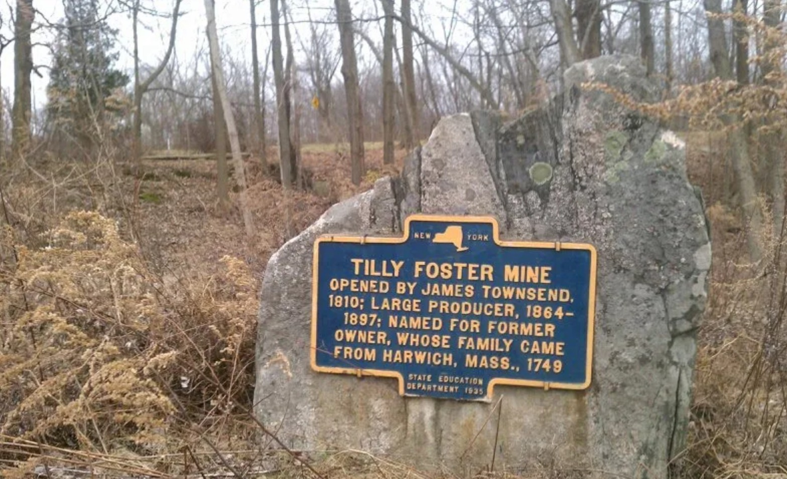

Tilly Foster Mine
U.S. Route 6 at Tilly Foster.

TILLY FOSTER MINE
Opened by James Townsend,
1810; large producer, 1864–
1897; named for former
owner, whose family came
from Harwich, Mass., 1749.
About this Marker
The Tilly Foster Iron Mine was, for a time, one of the most productive iron ore operations in the Hudson Valley — and from 1887 to 1889 it operated as the largest open-pit mine in the world. At its peak in the 1870s it employed hundreds of miners producing some 7,000 tons of ore per month.
The mine took its name from Tilly Foster, a Connecticut investor from the Town of Washington, Litchfield County, who acquired land in this corner of Southeast in 1830 for $3,598 but is not known to have lived here. Foster died around 1842 — more than a decade before commercial mining operations began on his namesake property in 1853 (the marker dates the opening to 1810, presumably for earlier exploratory work). His name remained attached to the site permanently through the iron mine that bears it.
A catastrophic collapse in 1895 killed 13 miners and effectively ended large-scale operations; the pit subsequently flooded. Today it is the water-filled depression visible on aerial photographs just north of the Middle Branch Reservoir along U.S. Route 6 — its surface still occasionally visited by scuba divers.
Town of Southeast, NY
Sources
- On-site photograph of the New York State Education Department marker (1935).
- Wikipedia — Tilly Foster Mine. Cross-referenced with the Gay Nineties Inn property research on this site (which independently sources the 1830 Foster acquisition deed, the 1887–1889 open-pit era, and the 1895 collapse).
- Putnam County Legislature presentation — “Tilly Foster Farm Overview,” August 25, 2022.